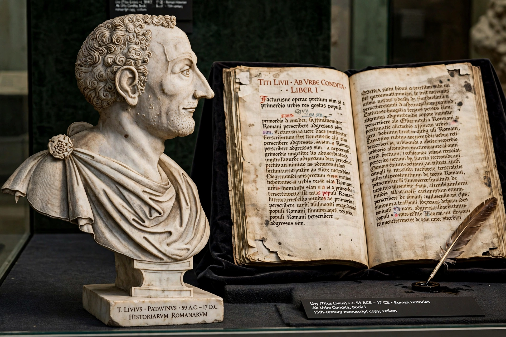

The Discourses on the First Ten Books of Titus Livius (Italian: Discorsi sopra la prima deca di Tito Livio, usually shortened to Discourses on Livy or simply The Discourses) is a work of political history and theory by Niccolò Machiavelli, written in the early 16th century and published posthumously in 1531. Taking the form of a commentary on the Roman historian Livy's account of the early Roman republic, it is widely considered the foundational text of modern republicanism.

| Discourses on Livy | |
|---|---|
| Author | Niccolò Machiavelli |
| Written | c. 1517 |
| Published | 1531 (posthumous) |
| Language | Italian |
| Subject | Republican political theory |
The work's three books treat respectively the internal organisation of a republic, war and expansion, and individual leadership. Machiavelli argues that Rome's greatness arose from the productive conflict between the plebs and the Senate, that republics must periodically return to their first principles, that a citizen army is superior to mercenaries, and that religion — exemplified by Rome's auspices and the reforms of Numa — is indispensable to civic order. Book III praises founders and generals such as Brutus and Camillus.
Whereas The Prince advises a single ruler, the Discourses celebrate distributed power and civic virtue, leading scholars to treat the two works together: the Discourses show Machiavelli's deeper preference for republics, while The Prince addresses the founding moment in which one person's virtù is required. The Discourses influenced republican thinkers from Harrington and the English Commonwealth tradition to Montesquieu, Rousseau and the American Founders.
See also: Machiavellianism · Republicanism · Livy